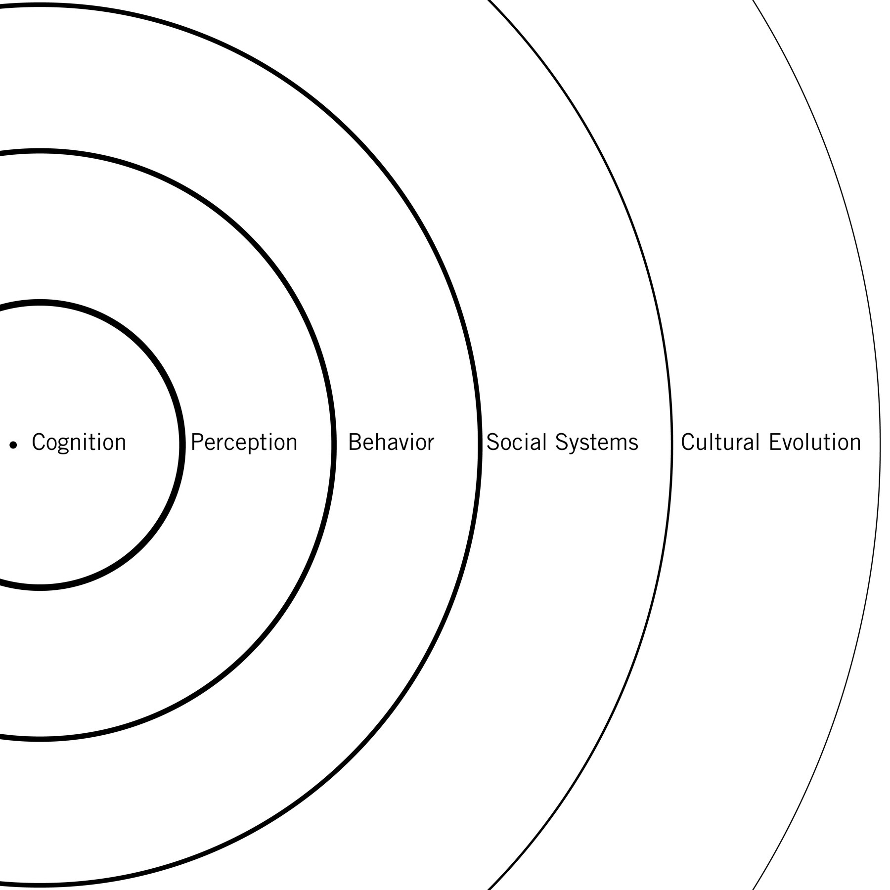

The idea of building for the "Long Now" reminds me a lot of Taleb's concept of Anti-fragility. The idea of a combination of strength and flexibility being a pre-requisite for anti-fragility itself has analogues from the world of sword making. The best swords have a combination of a hard edge that can remain sharp, and a soft core that can resist shocks. The Long Now Foundation isn't Stewart Brand's first foray into this ideology. His Whole Earth Catalogue was a major part of the counterculture movement of the 60's and 70’s and laid the foundation for things like blogs and wikis, which in turn are now a major part of our current civilization's attempt to resist shocks while preserving culture.
Comparing the Pace-Layering framework to the Cultural Affordances framework, we can see two different framings of the same concept of change. Where Pace Layering takes an outside-in approach that looks at the whole system and the rate of change, the cultural affordances framework looks inside, starting with a very individual circle of "cognition" and building outwards towards social systems and culture. The definition of culture in cultural affordances also seems to be at a smaller scale than what Brand seems to be describing. The small-c culture is what affects things like infrastructure and governance, while the long-term Culture seems to be what is affected by those layers.
The two frameworks could be seen as intercepting or interacting at some level. It almost feels like there's a layer missing in the cultural affordances framework, which should be called "Fashion" or "Representation" that sits between Behavior and Social Systems. Art, Fashion, and the way we represent ourselves are in many ways a reflection of the interaction between our internal perceptions and behaviors and the larger social systems we interact with. Be it to fit-in with a larger social system, or to rebel and counteract. It is often constantly changing depending on context and situations, but it forms the quick, chaotic "fashion" layer of Brand's framework.
In the interaction between these two frameworks, I also see this hidden idea of micro-systems. While Brand is looking at the civilization level, I see many parallels in smaller systems, such as IIT. There's quickly changing "fashion" as classes and research shape the small visual elements around us. But there's also commerce (tuition, housing, dining), infrastructure (from the new Kaplan building to the abandoned Machinery Hall), governance (the ongoing search for a Provost) and even nature (the physical boundaries of the campus or campuses, which change slowly over time). These micro-systems have their own pace layers, but themselves build up to create larger meso- and macro-systems, which in turn build civilizations. In some ways, civilizations are just pace-layers all the way down.